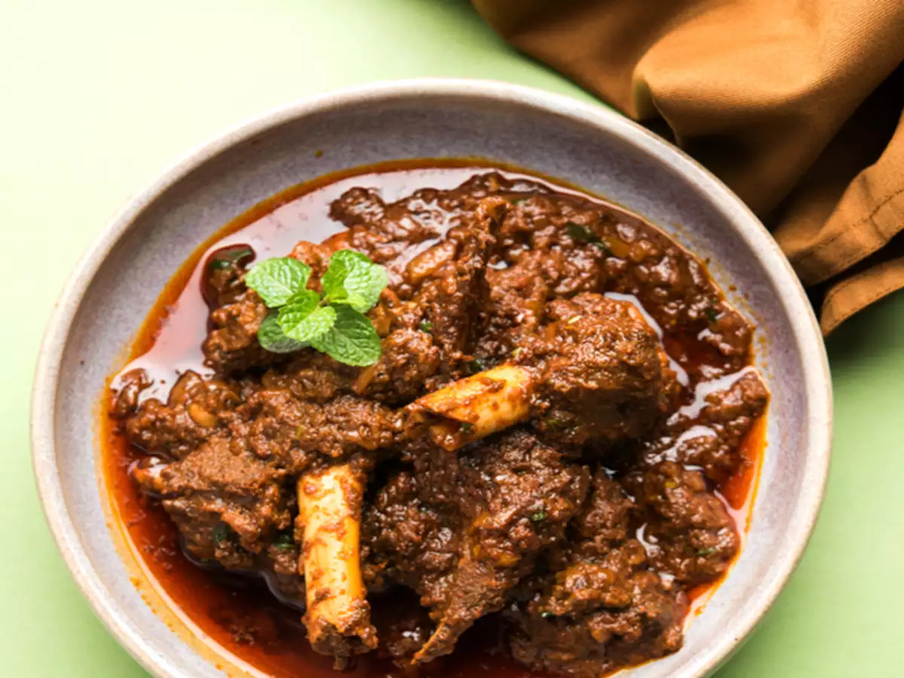

Mutton Korma

Process:
- In a bowl, marinate 500g of mutton pieces with 1 cup of yogurt, 2 tablespoons of ginger-garlic paste, 1 teaspoon of turmeric powder, 1 teaspoon of red chili powder, 1/2 teaspoon of garam masala, and salt to taste. Let it marinate for at least 1 hour or overnight in the refrigerator.
- In a large pan or pressure cooker, heat 3 tablespoons of oil over medium heat.
- Add 2 sliced onions and cook until golden brown.
- Add the marinated mutton pieces and cook until they are browned on all sides.
- Add 2 tablespoons of cashew paste and cook for 2 minutes.
- Add 1 cup of water, cover the pan or pressure cooker, and cook for about 30-40 minutes (or follow the pressure cooker instructions) until the mutton is tender and cooked through.
- In a separate pan, heat 2 tablespoons of ghee or clarified butter.
- Add 1 teaspoon of cumin seeds and let them splutter.
- Add 2-3 green cardamom pods, 2-3 cloves, and 1-inch cinnamon stick. Sauté for a minute.
- Add 1 finely chopped onion and cook until it turns golden brown.
- Add 1 tablespoon of ginger-garlic paste and sauté for a minute.
- Add 1 tablespoon of coriander powder, 1/2 teaspoon of turmeric powder, 1/2 teaspoon of red chili powder, and 1/2 teaspoon of garam masala. Mix well.
- Add the cooked mutton along with its juices to the pan and mix everything together.
- Cook for an additional 5-10 minutes, stirring occasionally, until the flavors meld together.
- Garnish with chopped coriander leaves and serve hot with naan or rice.
Nutrient and Calorie Values
| Nutrient |
Value |
| Calories |
500 |
| Protein |
25g |
| Fat |
20g |
| Carbohydrates |
10g |
| Fiber |
2g |